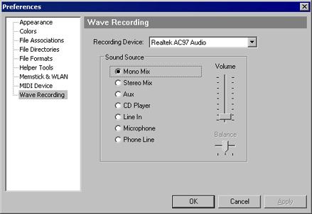
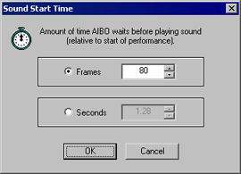

7.0 Wave Sound Editing
Wave files are good for recording arbitrary
sound effects (such as dog barks). However, wave files consume
MUCH more space than MIDI files. A one minute MIDI file might
use 5-10 KBytes. A one minute WAVE file needs 480 KBytes
(50 to 100 times the size). Too many long wave files
quickly consumes space available on the memory stick.
AIBO supports 8Khz, 8-bit, single channel, PCM format WAVE
files. Skitter verifies Waves files are compatible with
AIBO, and offers easy one-click conversions for those which
aren't. Skitter filters, down-converts high bit-rates, and
combines multiple channels automatically.
7.1 Navigating Wave Files
| An orange marker bar shows the
current time position.
Left-clicking
in the ruler or wave panes moves the marker. |
|
|
|
Click-n-drag
in the ruler or wave pane, and a green selection marker
appears at the starting point. Skitter highlights between the
markers & changes any included motion keyframe tabs
green. The motion keyframes cannot be edited from the Wave
editor.
|
|
7.2 Capture & Record Wave Sounds
Skitter supports wave
capture. Simply click the record button.
To select what to record from, click the "Setup" button.
Select a sound source from the list shown. Typically this would
be "Microphone", or an output "Mix". If one doesn't work,
trial & error is fairly painless.
Note: The available sound sources could vary depending on the
sound card manufacturer. Also, if your computer has multiple
sound cards, you might need to change the "Recording Device".

Alternatively, you can use commercial software, such as
CoolEdit, then later import capture sound into Skitter.
|
|
7.3 Wave Sound Effects
Skitter has a variety of special effects for wave files:
- Increase/Decrease Volume. Make wave
sound louder/quieter by 25%.
- Increase/Decrease Speed. Make wave
sound play faster/slower (raise/lower pitch) by 50%.
- Amplify Volume. Arbitrary volume
adjust (50% to 300%).
- Echo Effects. Adds echo to produce
chorus effects (short delays), or canyon effects (longer delays).
- Fade In/Out. Make sound fade to
nothing, or any percentage of original, or visa-versa.
- Insert Silence. Inserts silence into
the
wave file.
- Invert Wave. Inverts the
amplitude. Useful sometimes for matching up waves from different
sources.
- Normalize Wave. Changes overall volume
so maximum is 100% (ie: makes wave as loud as possible).
- Reverse Wave. Sounds plays back to
front.
- Scale Sound. Stretch/shrink a wave
file. Note this will affect pitch.
|
7.4 Sound Start Time
AIBO supports arbitrary sound start
times. This is very useful for aligning sound to
motions & LED's. The start time is specified in either
motion
frames, or in time (seconds).
AIBO waits the specified interval, relative to the start of motion or
LED's, then begins the sound playback.
|

|
7.5 Undo/Redo Changes
If you make a change that doesn't work out, simply undo
it
(Edit Menu->Undo). Skitter supports unlimited undo (ie:
all edits since the wave file was loaded). If you undo too
much, you can reapply changes (Edit Menu->Redo).
Keyboard shortcuts of Ctrl+Z (Undo) and Ctrl+Y (Redo)
are available.
7.6 The Splitter Bar
The vertical splitter bar allows two views of the Wave
file
at once. To adjust the position of the splitter bar, select:
"Window Menu -> Split Window".
You can
move the splitter at any time. To dock the splitter bar
(hide it), simply drag the
splitter to its left-most position.
|